충남대학교 컴퓨터공학과 김현수 교수님의 "소프트웨어 공학" 강의를 필기한 내용입니다.
다소 잘못된 내용과 구어적 표현 이 포함되어 있을 수 있습니다.
프로젝트 관리
- 뻔한내용이지만 프로젝트를 관리하는데는 다음과 같은 일들을 한다
- 제안서 작성
- 계획(과정, 비용, 노력 등) / 스케줄링
- 인력 선발 및 평가
- 모니터링 / 검토
- 보고서 작성 및 프레젠테이션
프로젝트 계획 수립에 대해
- 일단 당연히 시간이 많이 걸리는 작업이다
- 초기 단계부터 마무리 단계(배포)에 이르기까지 지속되는 활동임
- 새로운 정보가 생길때마다 계획을 정기적으로 수정할 필요가 있다
계획의 유형
- 품질 계획
- 검증(테스트) 계획
- 인력 관리 계획
- 등등이 있음
프로젝트 개발 노력 추정
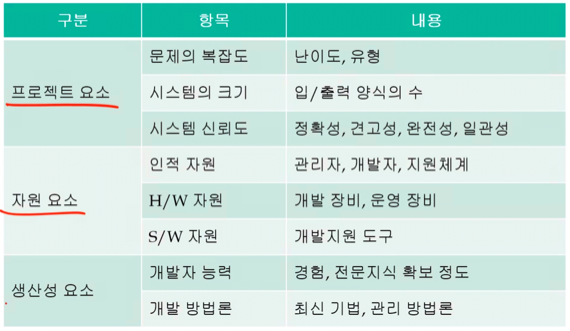
- 프로젝트 요소는 프로젝트 자체에 대한(쉽게 말해 소스코드에 대한) 요소
- 자원은 말그대로 인적자원이든 컴퓨터든 돈이든 이런 자원들
- 생산성은 개발자의 능력이나 프로젝트 혹은 개발에 대한 방법론을 말함
- 프로젝트 개발 노력을 추정하는데는 Function Point Model 와 Object Point Model 이 두개가 사용된다
Function Point Model
- 기능 점수 모델이라고 번역하대
- 이건 사용자에게 제공되는 기능들을 가지고 노력이 얼마나 필요할지 추정해보는 모델이다
- 데이터 관리를 위주로 하는 프로젝트의 경우 적합한 모델이고
- 기능을 잣대로 판단하기 때문에 조직과 프로그래밍 언어와 무관하게 어플리케이션의 복잡도를 추정 가능하댄다
- 과정은 다음과 같다
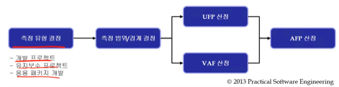
- 일단 유형을 알아야 한댄다
- 개발 프로젝트의 경우에는 누군가에게 의뢰를 받아 개발하는 것을 의미하고
- 유지보수는 말그대로 유지보수
- 응용 패키지 개발은 널리 사용될 수 있는 어플리케이션을 개발하는 것이라고 이해하면 될듯
- 범위 / 경계 설정은 사용자와 프로그램 간의 경계를 설정한다는데 뭔소린지 모르겠음
- UFT(Unadjusted Function Point) : 보정하기 전 기능점수를 산정
- 얘를 산정하기 위해서는 다음의 다섯가지 소프트웨어 구성 요소를 알아야 한다
- External Input : 외부에서 들어오는 리퀘스트를 처리
- External Output : 처리결과인 리스폰스를 외부로 보내는 것
- External Inquiry : 사용자가 단순히 정보를 조회하는 것을 처리하는 것 을 말하는거같음 - 약간 GET 메소드같은거 말하는게 아닌가 생각해본다
- Internal Logical File : 시스템 안에서 유지되고 사용자가 식별 가능한 논리적으로 연관된 자료 및 제어 그룹이라는데 뭐 DB같은거 말하는건가
- External Interface File : 시스템 안에서 유지되지는 않지만 참조할 수는 있는 다른 어플리케이션에 유지되는 사용자가 식별 가능한 논리적으로 연관된 자료 및 제어 그룹이라는데 뭔지 모르겠음
- 일단 4번이랑 뭔차이가 있는진 알겠는데 뭘 말하는건지 예시가 생각이 안나누
- 얘를 산정하기 위해서는 다음의 다섯가지 소프트웨어 구성 요소를 알아야 한다
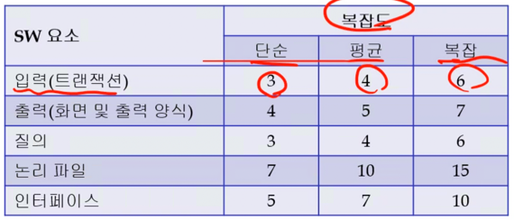
- 그리고 위 그림처럼 각 구성요소마다 가중치를 산정하고
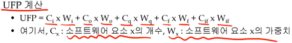
- 구성요소 하나하나마다 갯수와 가중치를 곱해 UFP를 계산해준댄다
- 대충 감은 오쥬?
- VAF(Value Adjust Factor) : 보정을 위해 곱해줄 인자들을 산정
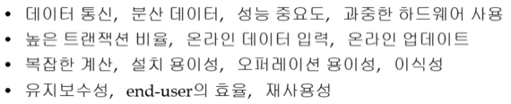
- VAF는 위의 14개의 기술적 분야 에 대해 복잡도를 고려하여 0~5의 점수를 부여한댄다
- 즉 저 14개 각각에 대해 일단 0~5점씩 점수를 주고
- 각 점수에 0.01을 곱한 뒤 0.65를 더해주면 VAF의 결과인 TCF(Total Complexity Factor) 가 나오게 된다
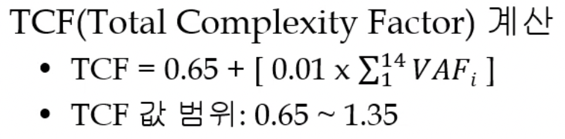
- 위의 사진이 뭔말인지 알겠으면 이해된거임
- AFP(Adjusted Function Point) : 보정된 기능점수 산정
- 위에서 구한 UFP에 TCF를 곱하면 AFP가 나오게 된다
- 근데 여기서 주의할 점은 AFP라는 것은 그냥 프로젝트의 크기(규모)에 대한 추정치 이므로 이것을 이용해 얼마의 노력이 필요할지 또 구해줘야 한다
- 프로젝트 전체에 대한 AFP에다 사람 1명이 1개월동안 개발할 수 있는 AFP를 나눠주면 사람 1명이 몇개월이 걸릴지 알아낼 수 있을 것이다
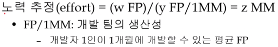
- 위 그림을 잘 생각해보면 FP가 소거되어 결국에 단위가 MM이 되고 이것은 사람 한명에 개발할 수 있는 양을 뜻한다(Man Month - MM)
- FP / 1MM값은 뭐 알아서 알아내라 이거지
Object Point Model
- 얘는 지금 대부분의 프로젝트가 객체를 기반으로 개발되고 있다는 점에 착안한 모델이다
- 러프하게 말하면 개발에 사용될 객체의 갯수와 각 객체의 구현 난이도를 가지고 노력의 양을 추정하는 것
과정
- 일단 UML이나 요구 분석 등을 통해 객체가 몇개나 필요할지 알아낸다 - 이 값을 Cc라고 하자
- 그리고 사용자가 입력할 수 있는 방식을 분류하고 각각에 가중치를 부여한다 - 이 값을 Wi라고 하자
- 아래의 그림은 분류하고 가중치를 매긴 예시이다
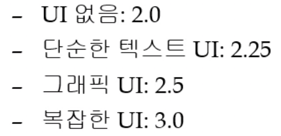
- 이후 다음의 공식을 이용해 최종 클래스 갯수(Total Class count)를 알아낸다
- 마지막으로 클래스 하나를 개발하는데 드는 노력의 평균적인 추정치를 곱하면 된다 - 이값은 MD 이며 Man Day, 즉, 사람 한명이 하루에 개발할 수 있는 양을 의미한다
- 결과적으로 이 프로젝트를 개발하는데 걸리는 일수의 추정치가 나오고, 보통 한달에 일하는 날은 22일 정도로 잡으므로 22로 나누면 몇개월이나 걸릴 지 추정할 수 있게 된다
프로젝트 일정 관리
- 프로젝트 일정 관리 프로세스는 일단 Activity Definition(활동 정의) 을 해야 한다
- 이건 뭐냐
- 프로젝트에 필요한 주요 활동들(Tasks)을 정의하고 그 활동들을 달성하기 위한 작은 활동들(Sub Tasks)을 식별하는 것이랜다
- WBS(Work Breakdown Structure) 을 짜면서 진행하게 됨
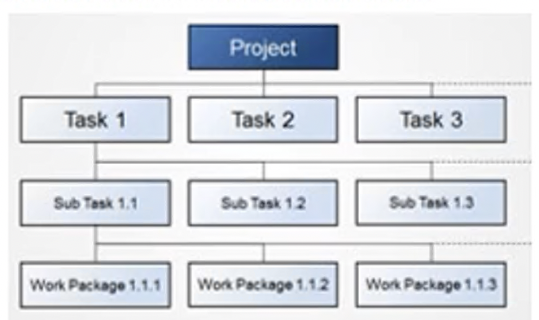
- WBS라는 것은 위 그림처럼 프로젝트가 있고 그 프로젝트를 위한 여러 Tasks들이 존재하고, 각 Task의 Sub Task를 정리해 나가는 도표인 것
- 이러한 방법을 통해 정의한 활동들에 대해 순서를 정하고, 자원은 얼마나 필요할지, 기간은 얼마나 걸릴지 등을 추정하는 과정을 뒤이어 하게 된다
- 그리고 이후에는 추정한 내용들을 바탕으로 일정 계획을 수립하고, 통제하는 과정( - 계획 대비 차이나는 일정을 모니터링해서 조치를 취하는 것)을 하게 된다
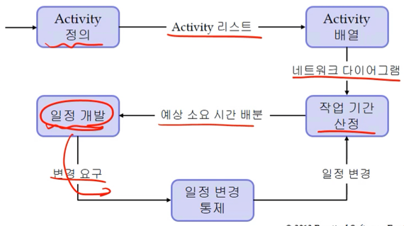
- 그래서 결과적으로는 위와 같은 플로우를 가지게 된다
- 저기서 Activity 배열이라는 것이 Activity 순서를 얘기하는 것이고, 이 순서를 도표로 나타낸 것이 네트워크 다이어그램이다
여러 용어들
- Activity : 뭐 니가 아는 활동이라는 뜻이긴 한데 여기서 중요한 것은 프로젝트의 진행상황을 알 수 있게 하기 위해 가시적인 산출물(뭐 제안서라던지, 프로토타입이라던지 등등)이 나오는 작업에 대해 하나의 활동이라고 칭하더라
- Milestone : 버전 1.0배포같은 중요한 이벤트나 활동의 종료 시점을 의미함
- Deliveries : 고객에게 전달되는 프로젝트 결과물
PERT / CPM 차트
- PERT / CPM 차트는 WBS등을 통해 세분화된 활동을 효율적으로 일정 관리하고 지원하기 위한 하나의 툴이다
- 관리에 대한 작업도 포함시킬 수 있고 작업 시간을 정확하게 예측할 필요가 있댄다
- 뭐 장점으로는 일정을 계획하는데 도움이 되고 작업들 간의 관계를 표현하기 좋고 병행 작업 계획을 하기에 좋고 일정 시뮬레이션도 가능하며 일정을 점검하거나 관리가 가능하댄다
일정 계획 수립 과정 예시
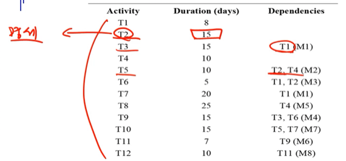
- 위 표는 활동들과 소요시간, 의존성을 나타낸 표이다
- 일단 어떤 Activity들이 있는지 정의한 것이 첫번째 열
- 각각 Activity들에 소요되는 시간이 얼마나 걸릴지 추정한 것이 두번째 열
- 그리고 해당 Activity에 대해 선행되어야 할 Activity에 대해서 세번째 열에 정리가 되어 있는 것
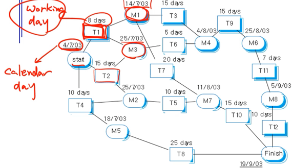
- 그리고 위의 그림은 표를 기반으로 그린 PERT / CPM차트이다
- 일단 네모 박스는 Task(활동), 둥근 모서리의 박스는 Milestone(이정표)를 나타낸다
- 그리고 Task 위에 있는 Days는 Working Day이고 Milestone 위에 있는 Date는 Calendar Day이다 - 즉, Task위에 있는 Day는 업무일 기준 소요 일수를 나타낸 것이므로 이 일수에 휴일까지 포함시켜줘야지 Milestone 위의 Date가 나오게 되는 것
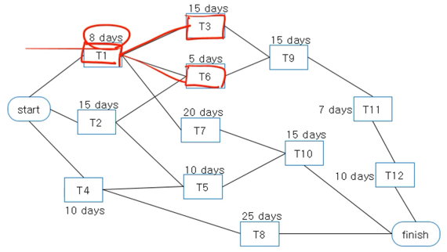
- PERT / CPM 차트에서 Milestone을 빼고 간략하게 표현하면 위와 같이 된다
- 시험문제에 이 PERT / CPM 차트 그리는 문제 나온댄다 - 간략한 표현을 사용하여 그리라네
- 그리고 여기에서 Critical Path(임계경로) 라는 말이 등장한다 - Critical Path(임계 경로) 라는 것은 PERT / CPM 차트에서 시작부터 끝까지 가는 경로 중 가장 시간이 오래 걸리는 경로를 뜻한다
- 그리고 이 임계경로를 따라가는데 걸리는 시간은 프로젝트를 수행하는데 필요한 최소시간을 나타낸다
- 이건 왜그러냐면 프로젝트를 진행하는데 저기서의 경로 하나만을 따라가는 것이 아니고 저기 있는 모든 Task들을 끝내야 하기 때문에 모든 노드들을 다 방문하게 된다
- 근데 가장 긴 경로를 따라가는 와중에 그 경로상에 있는 작업들만 하는게 아니고 다른 경로도 병렬적으로 수행할 수 있기 때문에 가장 오래걸리는 경로를 기준으로 프로젝트에 소요되는 시간의 최소값을 산정하는 것
- 예를들어 S-1-3-0-11-12-F의 경로가 위의 차트의 경우 임계경로가 되는데 여기에 소요되는 시간이 55일이다
- 이 경로를 따라감과 동시에 S-4-8-F의 경로를 병렬적으로 수행하면 이 경로는 35일만에 끝나기 때문에 임계 경로의 작업들이 다 끝나기 전에 완수할 수 있다
- 이런식으로 다른 경로들도 쫒아가기 때문에 프로젝트를 완수하는데 최소한 임계경로 소요시간인 55일은 필요할 것이라고 생각하는것
- 즉, 작업들을 병렬적으로 처리하기 때문에 차트의 모든 일수를 더한 것 보다는 일찍 끝나지만 가장 긴 경로를 따라가는데 걸리는 시간보다 짧을 수는 없다 이거임
- 뭔얘긴지 감은 오제?
Gantt chart
- 운영체제시간에 한번 본 적 있제?
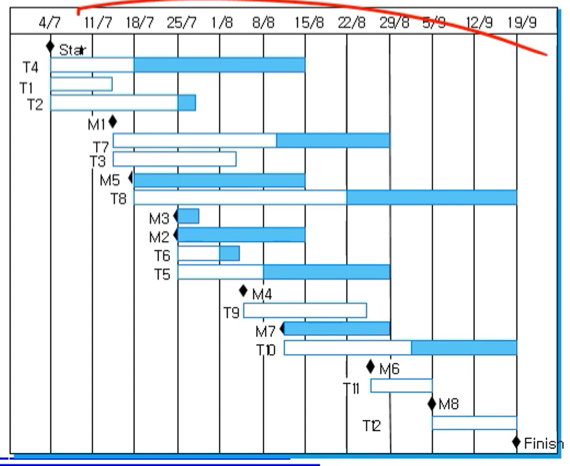
- 위 그림처럼 작업의 시작과 끝을 나타낸 차트를 Gantt chart라고 한다
- 여기서는 하얀색 막대는 작업 기간, 파란색 기간은 작업을 끝내고 나서의 여유기간을 나타내며 마름모가 Milestone을 나타낸다
- 그리고 시간의 흐름을 보기 쉽기 때문에 계획 대비 진척도를 파악하기 쉬우며
- 각 작업마다 담당자를 명시한다면 개인별 진척도를 파악하는데 에도 도움이 된다
- 여기서 여유시간이라는 말이 나왔는데 얘는 한마디로 지연 가능 범위를 뜻하게 된다
- 위에서의 PERT / CPM 차트를 보면 경로중에 S-4-8-F라는 경로가 있었는데 이것을 저 간트차트에서 보자
- 예시에서의 임계경로 소요시간이 55일이었는데 S-4-8-F경로의 경우에는 소요시간이 35일 이므로 20일 가량이 남는다
- 따라서 이 경로에 대해서는 T4와 T8 합쳐서 20일 가량은 지연이 되어도 지장이 없다는 뜻이다
- 만약 T4가 7월 18일에 끝났어야 되는데 좀 밀려서 8월 1일에 끝났다고 해보자 - 2주가 지연된거임
- 그럼 T8의 경우에는 8월 1일에 시작을 할 수 있는 것이고 따라서 T8이 2주 이하로 지연되면 전체적인 일정에는 지장이 없는 셈인 것이다
- 간트 차트에서 저 파란선은 그러한 여유시간을 나타내는 것임
Agile Process Planning
- 애자일 프로세스에서는 스토리카드라는 것을 사용한다
- 스토리 카드는 어떤 유저 스토리인지, 이것을 구현하기 위한 노력이 얼마나 들어갈지, 비즈니스적으로 우선순위는 어떻게 되는지, 연관된 유저 스토리는 뭐가 있는지 적혀있는 카드를 의미한다
- 그리고 이러한 스토리 카드들이 준비되면 선행 작업이 없거나 우선순위가 높은 작업을 초기 사이클에 배치하고 그렇지 않은 것들을 나중의 사이클에 배치해서 일정을 계획하게 된다
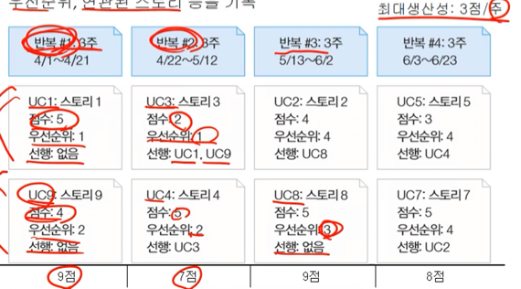
- 위 표를 보면 UC3은 우선순위가 높지만 선행 작업이 있기 때문에 밀린 케이스고
- UC8의 경우에는 선행작업은 없지마 우선순위가 낮기 때문에 밀린 케이스이다
- 그리고 생산성에 관한 부분은 위 그림에서 오른쪽 위에처럼 주당 최대 생산성을 잡아놓는다
- 위의 예시에서 한 사이클은 3주로 구성되어있기 때문에 한 사이클당 최대로 가질 수 있는 점수는 9점이 되고 1 사이클에는 그 점수를 다 사용한 것을 볼 수 있다
- 그리고 2 사이클에는 7점으로 2점을 남겼고 3 사이클에서도 9점을 맞췄다
- 하지만 최대 생산성을 넘어설 경우에는 해당 사이클에 다 못끝낼 가능성이 있기 때문에 일정을 조정하게 된다
인적 자원 관리
인적자원 관리가 필요한 이유
- 프로젝트에 딱 맞는 이상적인 인력이 투입되지 않을 가능성은 항상 있다
- 예를 들면 뭐 돈이 없다던지 그러한 이유때문에
- 또한 기존의 인력으로만 프로젝트를 진행하다 보면 그사람들만 경험이 쌓이게 되니까 조직에서는 신입을 뽑아서 프로젝트에 투입시켜 교육시키는 행동을 하기도 함
- 관리자는 이러한 제한된 인적자원 속에서도 프로젝트를 잘 관리해야한다
소프트웨어 개발 팀 구성하기
- 구성할 때에는 프로젝트의 규모가 제일 큰 영향을 주게 된다
- 왜냐면 프로젝트의 규모가 크다면 요구사항이 불분명하거나 변경될 가능성이 높아지기 때문에 사람도 많아야되고 의사소통의 기회도 더 많이 가져야 하기 때문
소프트웨어 개발 팀의 세가지 형태
1. 계층형 팀 - 수직관계가 분명함
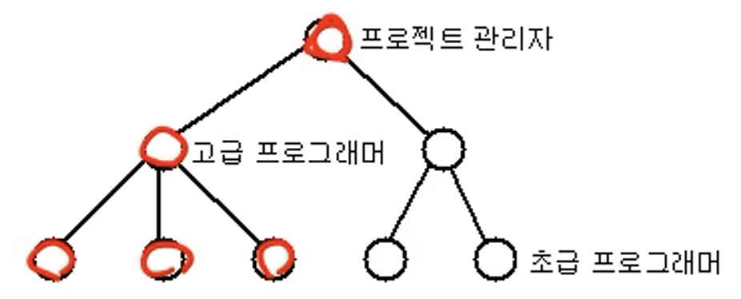
- 보통 이런식으로 경험과 실력을 기준으로 위아래를 나누게 된다
- 프로젝트 관리자가 시스템 전반에 대한 지휘를 하고
- 고급 프로그래머가 서브 시스템에 대한 지휘를 하게 된다
- 그리고 고급 프로그래머와 초급 프로그래머 사이에는 기술적인 소통이 많이 오가고
- 프로젝트 관리자와 고급 프로그래머 사이에는 진행상황 보고 등의 업무적인 소통이 많이 오가게 된다
- 장점으로는 (특히 대규모 프로젝트같은 경우)소프트웨어의 구조가 계층적으로 구성되어있는 경우에는 소프트웨어의 구조와 유사하게 계층형으로 팀을 구성하여 효율적으로 운용할 수 있다는 것이다
- 단점으로는 일을 잘하는 고급 프로그래머가 관리업무를 맡게 되어 역량 발휘를 제대로 못할 수도 있고
- 보통 바로 윗 계층이랑 소통하기 때문에 의사 전달 경로가 길어져 의사소통이 제대로 되지 않을 수 있다는 것이 있다
2. Egoless Team - 수평적인 분위기
- 수평적이라는 말답게 구성원들이 동등한 책임과 권한을 갖고있으며 자신의 일을 알아서 수행하거나 여럿이서 협동하여 수행하게 됨
- 또한 권한이 동등하기 때문에 민주주의 방식의 의사결정이 이루어지게 된다
- 장점으로는 작업 만족도가 올라간다 - 더 책임감을 느끼고 적극적으로 임하게 됨
- 또한 의사교류가 더 활발하게 일어나며
- 복잡하고 이해되지 않는 장기 프로젝트같은 경우에는 다같이 머리를 맞대로 이해하며 진행되는 것이 좋기 때문에 이러한 프로젝트에도 장점이 된다
- 단점으로는 책임이 명확하지 않은 일들이 생길 수 있다는 것과 의사결정이 미뤄질 수 있기 때문에 대규모 프로젝트에는 적합하지 않더라
3. Chief Programmer Team(책임 프로그래머 팀) - 수직관계와 수평관계가 섞여있는 형태
- 이것은 책임 프로그래머의 통제 하에 작은 규모의 팀이 움직이는 형태이다
- 우선 책임 프로그래머는 제품을 설계하고, 주요부분을 코딩하며, 의사결정을 하거나 작업을 지시하는 제일 권한이 쎈 사람이고
- 프로그램 사서라는 역할이 있는데 프로그램 리스트, 문서, 테스트 계획 등을 관리하는 다소 행정적인 업무를 하는 사람이다
- 또한 책임 프로그래머 바로 아래에 있는 보조 프로그래머는 기술적인 부분에 대해 책임 프로그래머와 상의하거나, 부분적으로 설계를 할 수 있고, 고객 등의 외부사람과 접촉하는 일을 한다
- 말단에 있는 프로그래머는 그냥 모듈단위로 코드 짜고 테스트하고 디버깅함
- 장점으로는 의사결정권자가 있기 때문에 이러한 결정을 빠르게 내릴 수 있고
- 소규모 프로젝트나 초보 프로그래머를 훈련시키는 계기로 적합하다는 점이다
- 단점으로는 책임 프로그래머의 역량에 프로젝트의 성패가 좌우될 수 있다는 점이 있다
효과적인 팀의 규모를 선택하기
- 팀의 규모를 선택할 때에는 Man-Month와 같은 지표가 있으면 선택하는 데에 많은 도움이 되지만
- 그렇다고 해서 팀의 규모가 커진다고 무조건 좋아지는 것도 아니다 - 사람이 많으면 배가 산으로 가는거지
- 팀의 크기는 필요한 지식의 총량과 정보교환이 감소하도록 정해야 한다 - 이유라도 좀 설명해주면 안되나
- 그리고 이미 했던 프로젝트를 반복하는 경우에 팀의 규모가 바뀔 수도 있다더라
- 또한 팀의 스케줄을 맞추지 못할거 같아 팀의 인원수를 늘리는 것은 바람직하지 않다 - 작업을 조정하고 새로 교육시키는 등의 추가적인 시간이 필요하기 때문
팀에게 필요한 기술
- Architect : SW Architecture 를 설계하는 일
- Project Manager : 프로젝트의 진행을 관리하는 일
- Configuration management & build specialist : 소프트웨어가 변경되는 것을 관리하던가 버전을 관리하는 일
- UI specialist : UI 설계
- Hardware & third-party SW specialist - 하드웨어나 우리가 만들지 않은 외부 소프트웨어에 대한 지식
- User documentation specialist : 사용자 설명서 잘만드는거
- Tester : 소프트웨어를 테스트해보는 것
- 위의 기술들이 필요하며 한 기술을 여러명이 맡거나, 한명이 하나씩 맡을 수도 있고 여러개 맡을 수도 있다더라
프로젝트 위험 관리
- 위험 관리라는 것은 위험을 식별하고 프로젝트에 끼칠 영향을 추정해 최대한 줄일 수 있게 하는 것이다
위험의 종류
- Project Risk : 일정이나 자원에 영향을 미치는 것
- Product Risk : 제품의 품질에 영향을 미치는 것
- Business Risk : 조직적인 차원에서 영향을 미치는 것
- 예를 들면 팀원이 나가는 Staff turnover 경우에는 일정과 인적 자원에 영향을 미치므로 Project Risk가 되는 것이다
- 그리고 제품을 개발하는데 필요한 케이스 도구(뭐 코드 생성기 같은 느낌인듯)의 성능이 생각보다 좋지 않은 CASE tool under-performance의 경우에는 제품의 품질이 안좋아지므로 Product Risk가 되는 것
- 또한 경쟁사에서 먼저 상품을 내놓는 Product competition의 경우에는 우리 제품의 판매량이 저조할 우려가 있으므로 Business Risk가 되는 것
위험 관리 프로세스
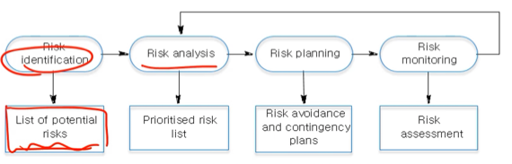
- Risk Identification : 위의 세 분류 각각에 대해 일어날 수 있는 위험들을 종합함
- 예시
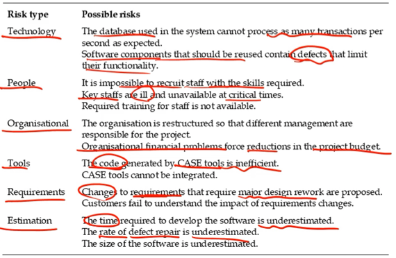
- Risk Analysis : 위험이 일어날 수 있는 가능성 및 해당 위험이 일어났을 경우 심각성평가
- 예시
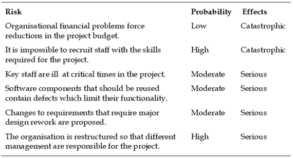
- Risk Planning : 해당 위험이 일어났을 경우 대처 프로토콜을 세워 놓는 것
- 회피하기 위한 Avoidance strategy
- 최소화하기 위한 Minimization strategy
- 비상시에 대처하기 위한 Contingency plan등을 계획한다
- 예시
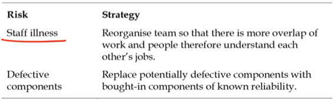
- Risk Monitoring : 프로젝트 전반에 걸쳐 위험에 대해 계속 모니터링함
- 정기적으로 평가하여 위험의 발생 가능성이나 위험의 심각성 등등을 지속적으로 업데이트함
- 즉, Risk identification, analysis, planning을 정기적으로 수행해 업데이트하는 것